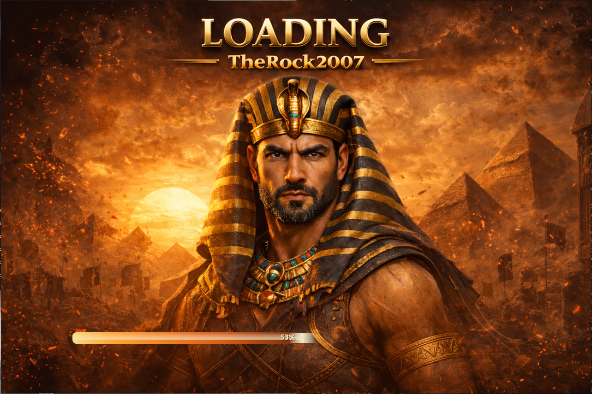

A management dashboard for operating Silkroad infrastructure with one coherent interface for configuration, shard/server visibility, service navigation, and admin-side tooling.
| Tier | Price | Includes |
|---|---|---|
| Starter | $59 | Core interface shell and standard server management sections |
| Expanded | $119 | Starter + extra admin tabs, branded labels, and custom quick actions |
| Custom | Quote | Workflow tailoring, new tools, environment-specific wiring, and deeper ops views |
No. This product is framed as an operator/admin tool for server maintenance and monitoring.
Yes. Tabs, labels, quick actions, and environment-specific modules can be tailored.
Yes. The three product pages now form one consistent family: player-facing launcher, distribution installer, and operator-facing manager.